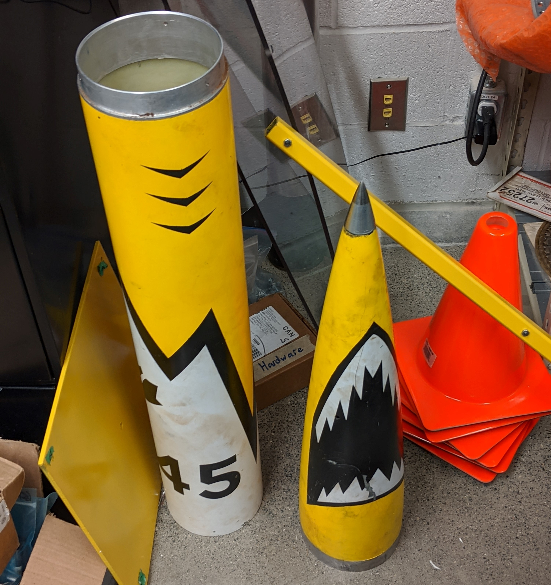

Waterloo Rocketry
Waterloo Rocketry is the University of Waterloo's Rocket design team. Every year, we iteratively design and create a high-power rocket to launch at the Spaceport America Cup. Our rockets are fully student researched and designed.
Research
Our development cycle starts here. In the fall, I researched parachute reefing. To avoid high g-forces and to avoid drifting by descending quickly, this method chokes one parachute at a high altitude, as opposed to sequentially releasing two parachutes differing in diameter. I proposed multiple possible designs outlining the deployment sequence and how the parachute would be rigged. After such research, the team meets together and decides on the design. We hope to implement my proposal in our 2021 rocket!
Fabrication
At this stage we begin constructing individual components of our rocket. I’m often in our machine shop milling recovery module components, such as the separation bulkheads. I test to ensure the parts mate properly, match the specification we decided on, and log any important changes.
Testing
We try to focus our time on reliability testing. This allows us to improve the design for a successful launch. We do wind tunnel and deployment tests for the recovery system, and I intend to do so extensively when we implement parachute reefing.
Next steps
Being a part of Waterloo Rocketry was one of my first experiences working on a multidisciplinary team, and with it came with its own challenges and insights with regards to collaboration and communication. I hope to be a large asset to the team, specifically the recovery squad, going forward.
Waterloo Rocketry is the University of Waterloo's Rocket design team. Every year, we iteratively design and create a high-power rocket to launch at the Spaceport America Cup. Our rockets are fully student researched and designed.
Research
Our development cycle starts here. In the fall, I researched parachute reefing. To avoid high g-forces and to avoid drifting by descending quickly, this method chokes one parachute at a high altitude, as opposed to sequentially releasing two parachutes differing in diameter. I proposed multiple possible designs outlining the deployment sequence and how the parachute would be rigged. After such research, the team meets together and decides on the design. We hope to implement my proposal in our 2021 rocket!
Fabrication
At this stage we begin constructing individual components of our rocket. I’m often in our machine shop milling recovery module components, such as the separation bulkheads. I test to ensure the parts mate properly, match the specification we decided on, and log any important changes.
Testing
We try to focus our time on reliability testing. This allows us to improve the design for a successful launch. We do wind tunnel and deployment tests for the recovery system, and I intend to do so extensively when we implement parachute reefing.
Next steps
Being a part of Waterloo Rocketry was one of my first experiences working on a multidisciplinary team, and with it came with its own challenges and insights with regards to collaboration and communication. I hope to be a large asset to the team, specifically the recovery squad, going forward.

Bulkheads and co2 canister

Nosecone and body tube section

Dry vidar III rocket